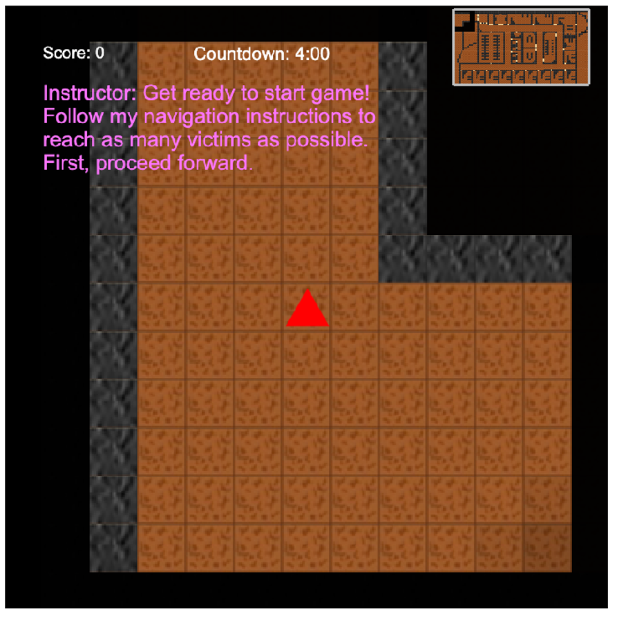
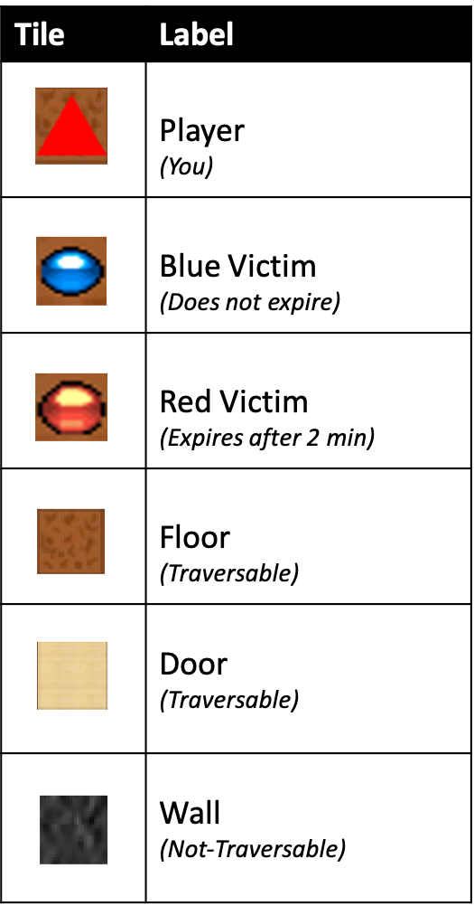

Round 2 of 2: Prepare to Enter the Building
Now you will enter the building and begin search-and-rescue.
Remember, you MUST FOLLOW the instructions of CANA, the second navigation assistant.
CANA has located all victims and will guide you through the building
by providing on-screen instructions.
Click to begin. If needed, re-read the details again below.
Part A: Overview
In this game, you are represented as the red triangle. Field of view will be restricted to a 5 step radius, and tiles outside of your field of view are hidden in black. A small mini-map of the entire building is provided in the upper right hand corner.
Below is an overview of all tile types in the game. Floors and doors are traversable, and walls are not.
Doors will restrict your field of view, since they are initially "closed". But once you are at the door, you will be able to see the contents behind.

You will be provided several on-screen tools.

Part B. Victims Details
There are 2 types of victims, each with different point values and expiration times. You must be standing at the same
location as a victim to save. Press SPACE key 1 time to save victim.